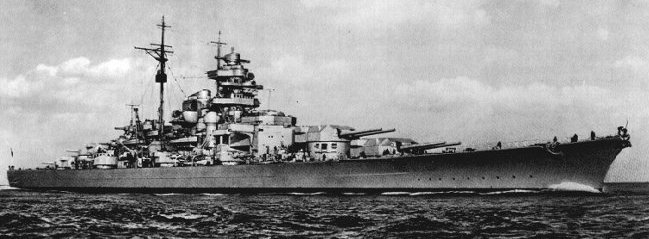

Acorazado Bismarck
El Bismarck fue el primero de los dos acorazados de la clase Bismarck de la marina de guerra alemana, la Kriegsmarine, durante la Segunda Guerra Mundial. Nombrado así en honor del canciller Otto von Bismarck cuando entró en servicio en la armada alemana. Junto con su gemelo Tirpitz, fue el acorazado más grande jamás construido por Alemania y uno de los mayores botado por cualquier armada europea. El Bismarck solo estuvo en servicio ocho meses y participó en una única operación ofensiva, de nombre en código Rheinübung, en mayo de 1941 comandado por el capitán Ernst Lindemann. En ella tenía la misión de irrumpir en el océano Atlántico junto con el crucero pesado Prinz Eugen y atacar la navegación aliada entre Estados Unidos y Gran Bretaña. Sin embargo, ambos buques fueron localizados por los Aliados frente a las costas de Escandinavia y los británicos enviaron varios buques de guerra para interceptarlos. El encuentro de las naves enemigas se produjo en la batalla del Estrecho de Dinamarca, en la que el Bismarck hundió el crucero de batalla HMS Hood, orgullo de la Royal Navy británica, y causó importantes daños al nuevo acorazado HMS Prince of Wales, lo que forzó su retirada. En cambio, el Bismarck recibió los impactos de tres proyectiles británicos y sufrió una importante pérdida de combustible de un tanque dañado. el Bismarck fue atacado por aviones torpederos Fairey Swordfish del portaaviones HMS Ark Royal. Un torpedo destrozó uno de los timones del acorazado alemán, lo que imposibilitó que maniobrase. La mañana siguiente, el inmovilizado Bismarck fue atacado y neutralizado por el intenso fuego de varios buques británicos, tras lo que su tripulación lo echó a pique y se hundió con gran pérdida de vidas. La causa exacta de su hundimiento ha sido motivo de debate entre los expertos. Mas información